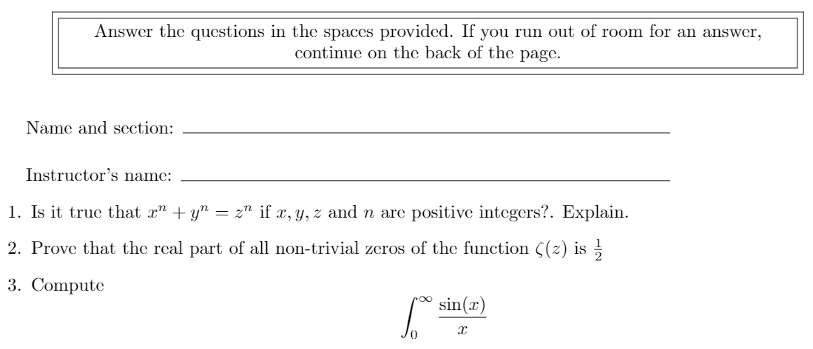
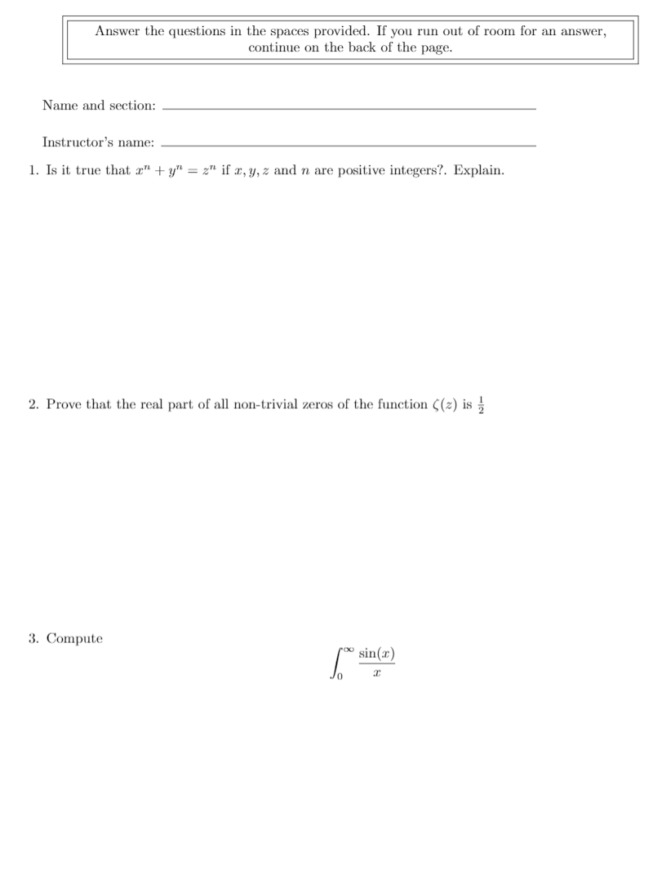
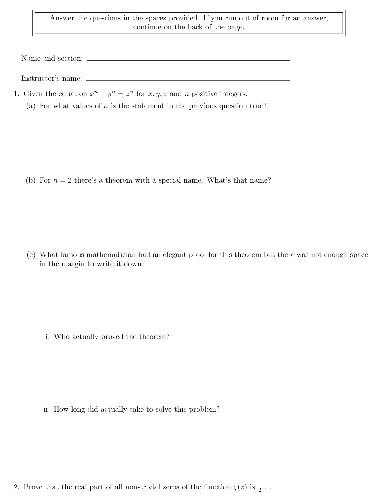
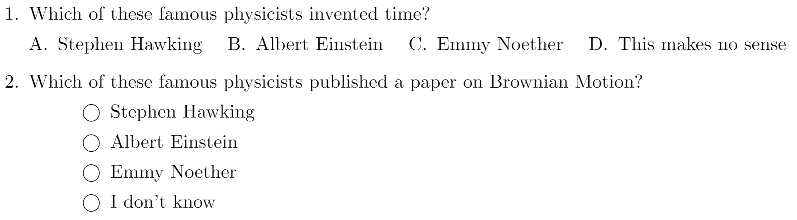
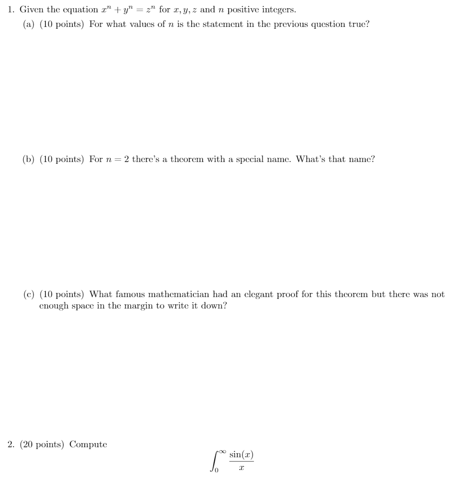
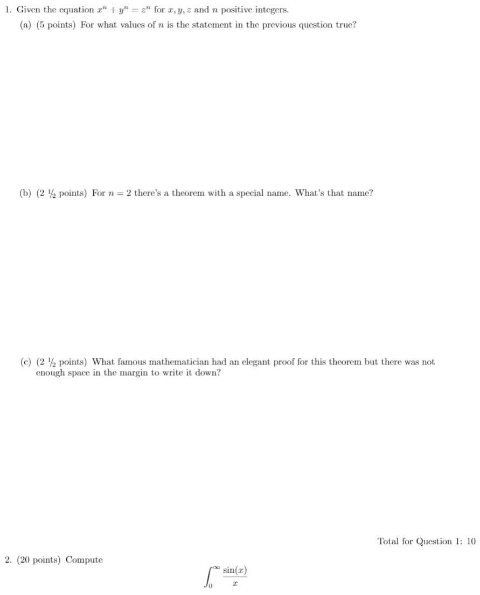
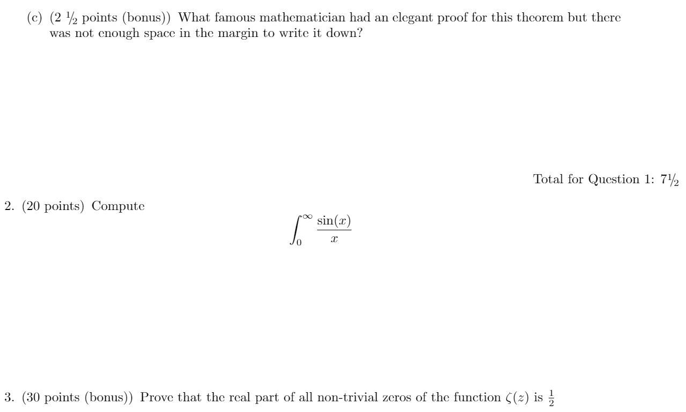
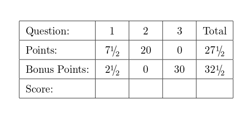
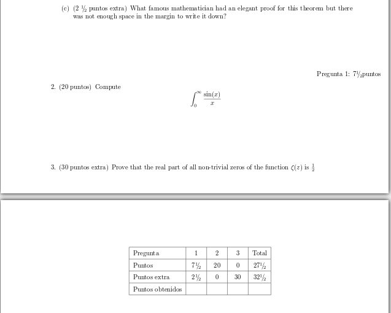
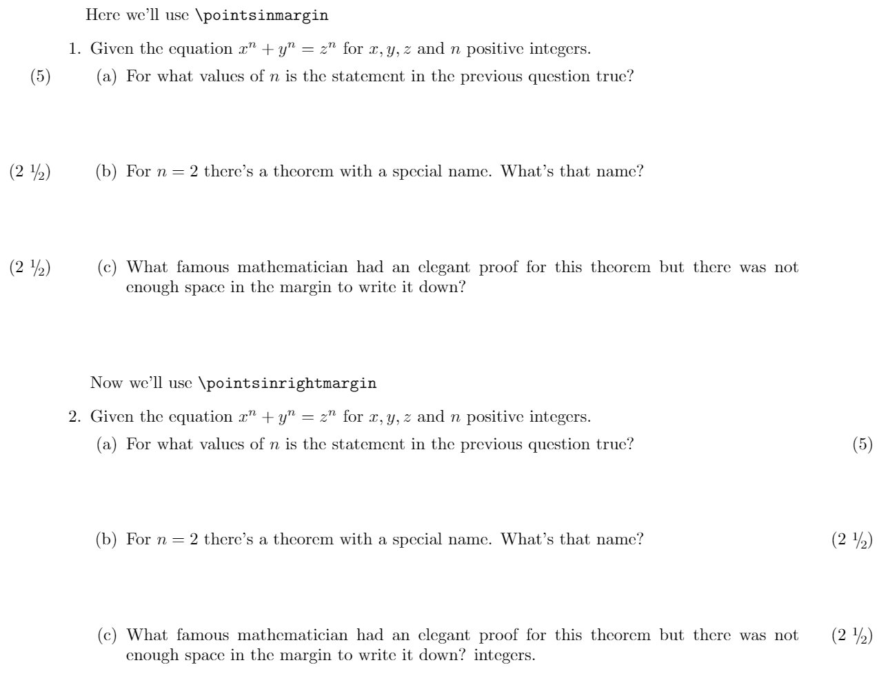

Typesetting exams in LaTeX
Introduction
The LaTeX class exam.cls makes it straightforward create exam papers and typeset questions. It sets a 1in margin in all paper sizes and provides special commands to write and compute grades. To use the exam class you must put the line
\documentclass{exam}
at the start of your .tex file. This will enable the package's exam-related commands, and set the page format to allow margins for corrections.
Basic example
Let's start with a basic working example of the exam class.
\documentclass{exam}
\begin{document}
\begin{center}
\fbox{\fbox{\parbox{5.5in}{\centering
Answer the questions in the spaces provided. If you run out of room
for an answer, continue on the back of the page.}}}
\end{center}
\vspace{5mm}
\makebox[0.75\textwidth]{Name and section:\enspace\hrulefill}
\vspace{5mm}
\makebox[0.75\textwidth]{Instructor’s name:\enspace\hrulefill}
\begin{questions}
\question Is it true that \(x^n + y^n = z^n\) if \(x,y,z\) and \(n\) are
positive integers?. Explain.
\question Prove that the real part of all non-trivial zeros of the function
\(\zeta(z)\) is \(\frac{1}{2}\)
\question Compute \[\int_{0}^{\infty} \frac{\sin(x)}{x}\]
\end{questions}
\end{document}

The syntax of the questions environment is very similar to that of the itemize and enumerate environments. Each question is typed by putting the command \question before it.
The other commands in this example are not specific to the exam class, but may be useful to create a quick header for your exam.
Creating new questions
In the previous section, a basic example showing how to create question was presented. Questions can be further customized, and this section explains how.
Spacing
If the students are required to answer the exam in the space provided, that space can be manually set or evenly distributed. See the example below:
\begin{questions}
\question Is it true that \(x^n + y^n = z^n\) if \(x,y,z\) and \(n\) are positive integers?. Explain.
\vspace{\stretch{1}}
\question Prove that the real part of all non-trivial zeros of the function \(\zeta(z)\) is \(\frac{1}{2}\)
\vspace{\stretch{1}}
\question Compute \[\int_{0}^{\infty} \frac{\sin(x)}{x}\]
\vspace{\stretch{1}}
\end{questions}
\clearpage
The output from this code is shown in the image below—the LaTeX document preamble is added automatically when you open the link:

In this example the command \vspace{\stretch{1}} after each question equally distributes the available space.
The command \clearpage inserts a page break point to continue typing questions in a new page.
If you want to manually assign the space to each question, use the command \vspace{} and in between the braces write the units of space you need. For instance, \vspace{1in} inserts a 1-inch vertical space. Check the documentation about lengths in LaTeX for a list of available units.
Subparts
If your questions have several parts focused on some subtopics you can use the environments parts, subparts, subsubparts and the corresponding commands \part, \subpart and \subsubpart. See the next example:
\begin{questions}
\question Given the equation \(x^n + y^n = z^n\) for \(x,y,z\) and \(n\) positive
integers.
\begin{parts}
\part For what values of \(n\) is the statement in the previous question true?
\vspace{\stretch{1}}
\part For \(n=2\) there's a theorem with a special name. What's that name?
\vspace{\stretch{1}}
\part What famous mathematician had an elegant proof for this theorem but
there was not enough space in the margin to write it down?
\vspace{\stretch{1}}
\begin{subparts}
\subpart Who actually proved the theorem?
\vspace{\stretch{1}}
\subpart How long did actually take to solve this problem?
\vspace{\stretch{1}}
\end{subparts}
\end{parts}
\question Prove that the real part of all non-trivial zeros of the function
\(\zeta(z)\) is \(\frac{1}{2}\)
...
\end{questions}
The output from this code is shown in the image below—the LaTeX document preamble is added automatically when you open the link:

The environments parts and subparts provide question-like nested lists. Just like in questions you can set manually the vertical spacing.
Multiple choice questions
There are four environments to create multiple choice questions.
\begin{questions}
\question Which of these famous physicists invented time?
\begin{oneparchoices}
\choice Stephen Hawking
\choice Albert Einstein
\choice Emmy Noether
\choice This makes no sense
\end{oneparchoices}
\question Which of these famous physicists published a paper on Brownian Motion?
\begin{checkboxes}
\choice Stephen Hawking
\choice Albert Einstein
\choice Emmy Noether
\choice I don't know
\end{checkboxes}
\end{questions}
The output from this code is shown in the image below—the LaTeX document preamble is added automatically when you open the link:

In this example, two different environments are used to list the possible choices for multiple-choice questions.
- The environment
oneparchoiceslabels the choices with upper case letters and prints them horizontally. If you want the choices to be printed in a list-like format, the environmentchoicesis the right choice.
- The environment
checkboxesprints check boxes before each choice. If you need the choices to be printed horizontally use the environmentoneparcheckboxesinstead.
Grading
Another important feature of the exam class is that it provides commands to make grading the exams easier.
Points in each question
You can add a parameter to each \question or \part to print the number of points you attain by correctly answering it. The additional parameter, inside brackets, after a question or a part represents the number of points assigned to it. You can change the appearance and the place where the points are printed, see the reference guide for additional commands.
\begin{questions}
\question Given the equation \(x^n + y^n = z^n\) for \(x,y,z\) and \(n\) positive
integers.
\begin{parts}
\part[10] For what values of \(n\) is the statement in the previous question true?
\vspace{\stretch{1}}
\part[10] For \(n=2\) there's a theorem with a special name. What's that name?
\vspace{\stretch{1}}
\part[10] What famous mathematician had an elegant proof for this theorem but there was
not enough space in the margin to write it down?
\vspace{\stretch{1}}
\end{parts}
\question[20] Compute \[\int_{0}^{\infty} \frac{\sin(x)}{x}\]
\vspace{\stretch{1}}
\end{questions}
The output from this code is shown in the image below—the LaTeX document preamble is added automatically when you open the link:

Counting points and half points
Sometimes it's convenient to include half points as value for parts of a questions. You can do this and then print then the value of the whole question. See the example below:
\documentclass[addpoints]{exam}
\begin{document}
\begin{questions}
\question Given the equation \(x^n + y^n = z^n\) for \(x,y,z\) and \(n\) positive
integers.
\begin{parts}
\part[5] For what values of \(n\) is the statement in the previous question true?
\vspace{\stretch{1}}
\part[2 \half] For \(n=2\) there's a theorem with a special name. What's that name?
\vspace{\stretch{1}}
\part[2 \half] What famous mathematician had an elegant proof for this theorem but there was
not enough space in the margin to write it down?
\vspace{\stretch{1}}
\end{parts}
\droptotalpoints
\question[20] Compute \[\int_{0}^{\infty} \frac{\sin(x)}{x}\]
\end{questions}
\end{document}
The output from this code is shown in the image below—the LaTeX document preamble is added automatically when you open the link:

The command \half adds half points to a question. The command \droptotalpoints prints the total number of points for the last question. For this last command to work you must add the option [addpoints] to the document class statement.
Bonus points
It is possible to add bonus questions, this extra points will later show up in the grading table. Adding bonus questions and parts is actually as simple as creating regular questions and parts.
\begin{questions}
\question Given the equation \(x^n + y^n = z^n\) for \(x,y,z\) and \(n\) positive
integers.
\begin{parts}
\part[5] For what values of \(n\) is the statement in the previous question true?
\vspace{\stretch{1}}
\part[2 \half] For \(n=2\) there's a theorem with a special name. What's that name?
\vspace{\stretch{1}}
\bonuspart[2 \half] What famous mathematician had an elegant proof for this theorem but there was
not enough space in the margin to write it down?
\vspace{\stretch{1}}
\end{parts}
\droptotalpoints
\question[20] Compute \[\int_{0}^{\infty} \frac{\sin(x)}{x}\]
\vspace{\stretch{1}}
\bonusquestion[30] Prove that the real part of all non-trivial zeros of the function
\(\zeta(z)\) is \(\frac{1}{2}\)
\vspace{\stretch{1}}
\end{questions}
The output from this code is shown in the image below—the LaTeX document preamble is added automatically when you open the link:

The commands \bonusquestion and \bonuspart print (bonus) next to the point value of the question.
Grading table
A table that show the points of each question can be printed with a special command.
\begin{center}
\combinedgradetable[h][questions]
\end{center}

There are three commands to print a table of grades:
\gradetable- Prints a table with the grades corresponding to regular questions. If there are bonus questions those are not included.
\bonusgradetable- Prints a table with the grades corresponding to the bonus questions only
\combinedgradetable- Prints a table with both, regular and bonus questions.
These commands take two extra parameters, each parameter inside brackets.
- The first one can be
[h]for a horizontal table or[v]for a vertical table. - The second one sets how the table is indexed:
[questions]to index the points by question and[pages]to list the points by page number.
Overleaf exam project example
The above examples have been combined to create a basic project template that you can use as a starting point for your work. You can create a new project by clicking/selecting the following link:
Open an Overleaf exam project example
.
Other languages
There is no support for languages other than English in the exam class. Nevertheless, it's easy to translate the default words for those in your local language. The project above contains a commented-out code
snippet that shows how to translate some document elements into Spanish.
\usepackage[spanish]{babel}
\pointpoints{punto}{puntos}
\bonuspointpoints{punto extra}{puntos extra}
\totalformat{Pregunta \thequestion: \totalpoints puntos}
\chqword{Pregunta}
\chpgword{Página}
\chpword{Puntos}
\chbpword{Puntos extra}
\chsword{Puntos obtenidos}
\chtword{Total}
...

The rest of the document would be exactly the same shown in previous examples. The commands typed here change the default words in the exam class.
\pointpoints{punto}{puntos}- Changes the words point and points for the words punto and puntos in regular questions and parts.
\bonuspointpoints{punto extra}{puntos extra}- Writes punto extra and puntos extras instead of bonus point and bonus points in bonus questions and bonus parts.
\totalformat{Pregunta \thequestion: \totalpoints puntos}- Changes the text printed by
\droptotalpoints. In the example it prints Pregunta 1: 7 1/2 puntos.
\chqword{Pregunta}- Changes the word Question for the word Pregunta in the grading table table. The rest of the commands change the other words in that table,
chpgwordfor Page,\chpwordfor Points,\chbpwordfor Bonus points,\chswordfor Score and\chtwordfor Total. These commands may change depending on the type of table your are creating, see the reference guide for the commands needed in other tables.
Reference guide
Placing and formatting the points mark for questions
These commands can be typed in the preamble to change the format of the whole document or right before a question to change the format from that question down to the next formatting command or the end of the document.
\poinstinmargin(or\pointsinleftmargin) will cause the point values to be printed in the left margin.
\pointsinrightmarginwill cause the point values to be printed in the right margin.
\nopointsinmargin(or\nopointsinrightmargin) will revert to the default situation.
\bracketedpointswill use brackets instead of parentheses around the point values.
\boxedpointsdraws a box around the point values.
Here is an example using \pointsinmargin and \pointsinrightmargin:
Here we'll use \verb|\pointsinmargin|
\begin{questions}
\pointsinmargin
\question Given the equation \(x^n + y^n = z^n\) for \(x,y,z\) and \(n\) positive
integers.
\begin{parts}
\part[5] For what values of \(n\) is the statement in the previous question true?
\vspace{40pt}
\part[2 \half] For \(n=2\) there's a theorem with a special name. What's that name?
\vspace{40pt}
\part[2 \half] What famous mathematician had an elegant proof for this theorem but there was
not enough space in the margin to write it down?
\vspace{40pt}
\end{parts}
Now we'll use \verb|\pointsinrightmargin|
\pointsinrightmargin
\question Given the equation \(x^n + y^n = z^n\) for \(x,y,z\) and \(n\) positive
integers.
\begin{parts}
\part[5] For what values of \(n\) is the statement in the previous question true?
\vspace{40pt}
\part[2 \half] For \(n=2\) there's a theorem with a special name. What's that name?
\vspace{40pt}
\part[2 \half] What famous mathematician had an elegant proof for this theorem but there was
not enough space in the margin to write it down?
integers.
\end{parts}
\end{questions}
The following image shows the output of the code above:

Changing default names in Grade Tables
The commands depend on the format and the information displayed on the table. The h and v within each command mean horizontal or vertical orientation. If the command is preceded by a b means it changes the format in a bonus table, if the command is preceded by a c means it works on combined tables. For instance, to change the word "Score" in a vertical oriented bonus table for the words "Points Awarded" you should use \bvsword{Points Awarded}.
Below a table with the default values is shown.
| horizontal | vertical | |
|---|---|---|
| grades table |
|
|
| bonus points table |
|
|
| combined table |
|
|
Further reading
For more information see:
- Creating a document in LaTeX
- Bold, italics and underlining
- Lists
- Mathematical expressions
- Subscripts and superscripts
- Brackets and Parentheses
- Aligning Equations
- List of Greek letters and math symbols
- Inserting Images
- Positioning images and tables
- Font sizes, families, and styles
- Font typefaces
- The exam class documentation.
Overleaf guides
- Creating a document in Overleaf
- Uploading a project
- Copying a project
- Creating a project from a template
- Using the Overleaf project menu
- Including images in Overleaf
- Exporting your work from Overleaf
- Working offline in Overleaf
- Using Track Changes in Overleaf
- Using bibliographies in Overleaf
- Sharing your work with others
- Using the History feature
- Debugging Compilation timeout errors
- How-to guides
- Guide to Overleaf’s premium features
LaTeX Basics
- Creating your first LaTeX document
- Choosing a LaTeX Compiler
- Paragraphs and new lines
- Bold, italics and underlining
- Lists
- Errors
Mathematics
- Mathematical expressions
- Subscripts and superscripts
- Brackets and Parentheses
- Matrices
- Fractions and Binomials
- Aligning equations
- Operators
- Spacing in math mode
- Integrals, sums and limits
- Display style in math mode
- List of Greek letters and math symbols
- Mathematical fonts
- Using the Symbol Palette in Overleaf
Figures and tables
- Inserting Images
- Tables
- Positioning Images and Tables
- Lists of Tables and Figures
- Drawing Diagrams Directly in LaTeX
- TikZ package
References and Citations
- Bibliography management with bibtex
- Bibliography management with natbib
- Bibliography management with biblatex
- Bibtex bibliography styles
- Natbib bibliography styles
- Natbib citation styles
- Biblatex bibliography styles
- Biblatex citation styles
Languages
- Multilingual typesetting on Overleaf using polyglossia and fontspec
- Multilingual typesetting on Overleaf using babel and fontspec
- International language support
- Quotations and quotation marks
- Arabic
- Chinese
- French
- German
- Greek
- Italian
- Japanese
- Korean
- Portuguese
- Russian
- Spanish
Document structure
- Sections and chapters
- Table of contents
- Cross referencing sections, equations and floats
- Indices
- Glossaries
- Nomenclatures
- Management in a large project
- Multi-file LaTeX projects
- Hyperlinks
Formatting
- Lengths in LaTeX
- Headers and footers
- Page numbering
- Paragraph formatting
- Line breaks and blank spaces
- Text alignment
- Page size and margins
- Single sided and double sided documents
- Multiple columns
- Counters
- Code listing
- Code Highlighting with minted
- Using colours in LaTeX
- Footnotes
- Margin notes
Fonts
Presentations
Commands
Field specific
- Theorems and proofs
- Chemistry formulae
- Feynman diagrams
- Molecular orbital diagrams
- Chess notation
- Knitting patterns
- CircuiTikz package
- Pgfplots package
- Typesetting exams in LaTeX
- Knitr
- Attribute Value Matrices
Class files
- Understanding packages and class files
- List of packages and class files
- Writing your own package
- Writing your own class